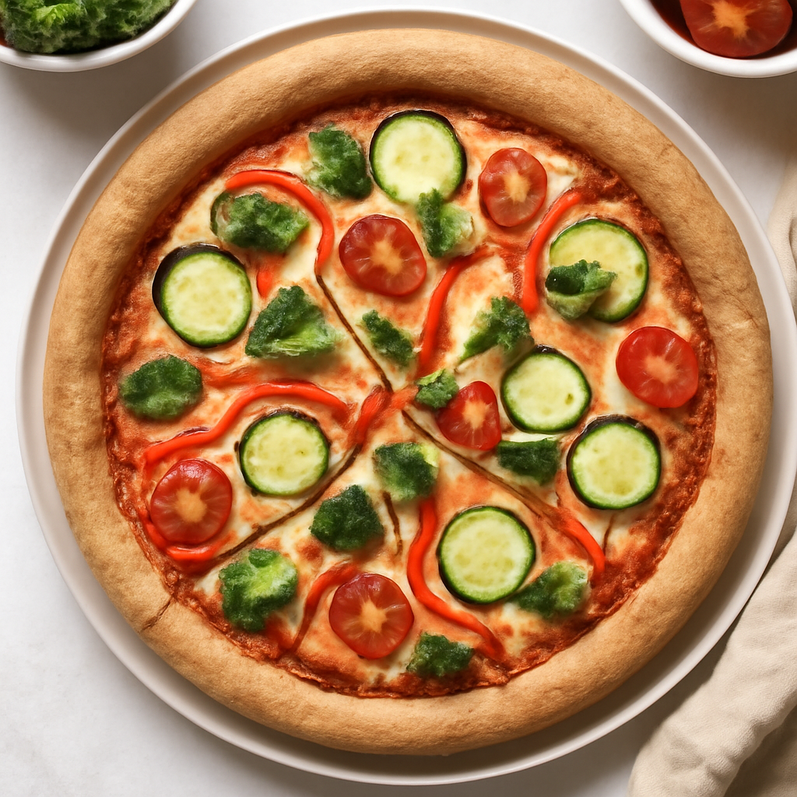

Friday — Whole Wheat Veggie Pizza

Cook Time: 40 minutes
Method: Oven
pizzawhole wheatoven
Ingredients for 6
- 1 whole wheat pizza crust (store-bought or homemade)
- 1 cup organic tomato sauce
- 1 cup organic mozzarella cheese, shredded
- 1 cup organic bell peppers, sliced
- 1 cup organic mushrooms, sliced
- 1 cup organic spinach
Instructions
- Preheat oven according to pizza crust instructions.
- Spread tomato sauce over the crust.
- Top with cheese and vegetables.
- Bake according to crust instructions (about 20-25 minutes).
Toddler Notes
- Cut pizza into small, manageable slices without crust for easier eating.
- Ensure toppings are soft.
← Back to weekly plan